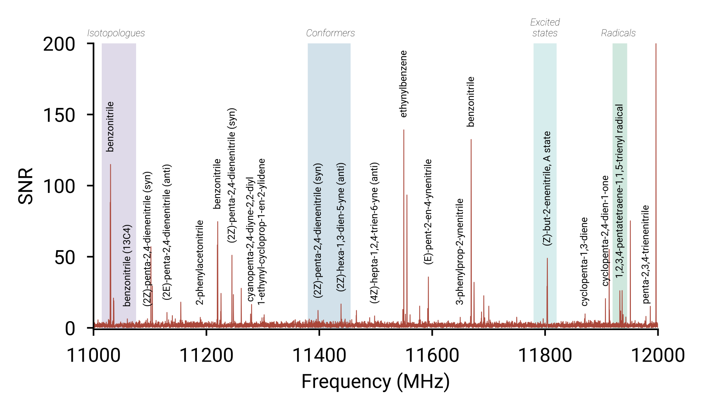
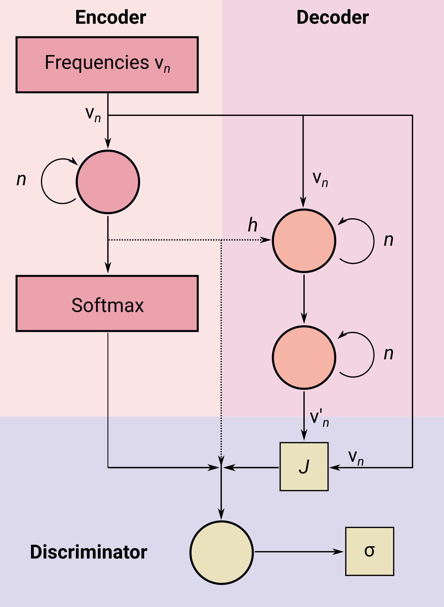

<!DOCTYPE html>
<html lang="en">
  <head>
    <meta charset="utf-8" />
    <meta name="viewport" content="width=device-width, initial-scale=1.0, maximum-scale=1.0, user-scalable=no" />

    <title>Guide to technical writing</title>
    <link rel="shortcut icon" href="./favicon.ico"/>
    <link rel="stylesheet" href="./dist/reveal.css" />
    <link rel="stylesheet" href="_assets/css/nyt.css" id="theme" />
    <link rel="stylesheet" href="./css/highlight/solarized-light.css" />

  </head>
  <body>
    <div class="reveal">
      <div class="slides"><section  data-markdown><script type="text/template">

# A Primer on Technical Writing

## How to use words for good

### Kelvin Lee

<figure>
	
</figure>
</script></section><section ><section data-markdown><script type="text/template"><!-- .slide: data-auto-animate -->

<div style="display: grid; grid-template-columns: 0.6fr 1fr; padding-top: 250px">
    <div>
        <h1>Table of contents</h1>
    </div>
    <div>
        <ul>
            <li>Introduction</li>
        </ul>
    </div>
</div>
</script></section><section data-markdown><script type="text/template"><!-- .slide: data-auto-animate -->

<div style="display: grid; grid-template-columns: 0.6fr 1fr; padding-top: 250px">
    <div>
        <h1>Table of contents</h1>
    </div>
    <div>
        <ul style="line-height: 70px;">
            <li>Introduction</li>
            <li>Why write?</li>
        </ul>
    </div>
</div>
</script></section><section data-markdown><script type="text/template"><!-- .slide: data-auto-animate -->

<div style="display: grid; grid-template-columns: 0.6fr 1fr; padding-top: 250px">
    <div>
        <h1>Table of contents</h1>
    </div>
    <div>
        <ul style="line-height: 80px;">
            <li>Introduction</li>
            <li>Why write?</li>
            <li>How write?</li>
        </ul>
    </div>
</div>
</script></section><section data-markdown><script type="text/template"><!-- .slide: data-auto-animate -->

<div style="display: grid; grid-template-columns: 0.6fr 1fr; padding-top: 250px">
    <div>
        <h1>Table of contents</h1>
    </div>
    <div>
        <ul style="line-height: 90px;">
            <li>Introduction</li>
            <li>Why write?</li>
            <li>How write?</li>
            <li>The perfect proposal</li>
        </ul>
    </div>
</div>
</script></section></section><section ><section data-markdown><script type="text/template">
<div class="two-column">
    <div>
        <h1>Introduction</h1>
        <div style="display: grid; grid-template-columns: 0.2fr 0.4fr">
            <p>2013</p>
            <p>Finished Honours at USyd</p>
            <p>2016</p>
            <p>Finished PhD at UNSW</p>
            <p>2017</p>
            <p>Started postdoc at Center for Astrophysics</p>
            <p>2020</p>
            <p>Moved to MIT</p>
        </div>
    </div>
    <div style="padding-top: 100px; margin-left: -100px">
        <figure></figure>
    </div>
</div>
</script></section><section data-markdown><script type="text/template">
<div style="display: grid; grid-template-columns: 0.8fr 1fr 0.6fr; padding-top: 150px; margin-left: -100px">
    <div class="img-frame">
        <figure>
            <figcaption>Observational astronomy</figcaption>
        </figure>
    </div>
    <div class="img-frame">
        <figure>
            <figcaption>High-resolution spectroscopy</figcaption>
        </figure>
    </div>
    <div class="img-frame" style="margin-left: -100px">
        <figure>
            
            <figcaption>Machine learning</figcaption>
        </figure>
    </div>
</div>
</script></section><section data-markdown><script type="text/template">
<div class="two-column">
    <div>
        <h1>Why am I giving this talk?</h1>
        <ul>
            <li>I write a lot</li>
            <li>I think about writing a lot</li>
            <li>I like talking about writing</li>
            <li>I communicate across multiple fields</li>
        </ul>
    </div>
    <div style="margin-left: -200px;" class="fragment">
        <figure></figure>
        <ul>
            <li>33 papers since 2017—7 in prep.</li>
            <li>>10 funding proposals (NSF, Smithsonian, NASA)</li>
            <li>>20 observing proposals (GBT, NASA, ALMA)</li>
            <li>Faculty proposals 🥲</li>
        </ul>
    </div>
</div>
</script></section><section data-markdown><script type="text/template">
<div class="two-column" style="margin-top: 350px">
    <div><h1>Disclaimer</h1></div>
    <div style="margin-left: -300px; text-align: justify">
        <p>Some ideas and content are borrowed from the MIT LEAPS program</p>
        <p>Credit, in those cases, is due to Associate Professor Anna Frebel (MIT)</p>
    </div>
</div>
</script></section></section><section ><section data-markdown><script type="text/template">
<div class="two-column" style="padding-top: 100px; margin-left: -50px">
    <div>
        <h1>Why write?</h1>
        <p style="padding-top: 50px">Two extreme attitudes to writing in STEM could be:</p>
        <div style="text-align: center; margin-left: -100px; padding-top: 100px">
            <i style="color: #ce6693" class="fragment">I'm a scientist so I don't need to write—that's for arts students.</i>
            <p>or</p>
            <i style="color: #f8a07e" class="fragment">Writing is hard and I don't know where to get started.</i>
            <p></p>
        </div>
    </div>
    <div style="text-align: center; margin-left: -150px">
        <p style="color: #ce6693" class="fragment">Communication is now a key aspect of STEM</p>
        <ul class="fragment">
            <li>Journal articles</li>
            <li>Research proposals</li>
            <li>Letters of recommendation</li>
            <li>Cover letters and job applications</li>
            <li>Press releases</li>
            <li>Social media</li>
            <li>Code documentation</li>
        </ul>
        <p style="color: #f8a07e" class="fragment">
            Writing <em>is</em> hard, but it gets better with practice.
        </p>
        <p class="fragment">Lucky for us, there's no shortage of chances to practice!</p>
    </div>
</div>
</script></section><section data-markdown><script type="text/template">
<div class="two-column" style="padding-top: 250px">
    <div>
        <h1>How write?</h1>
    </div>
    <div style="margin-left: -150px">
        <p>Get 💸 in four 🤟 steps:</p>
        <ol style="line-height: 70px">
            <li class="fragment">Identify your main message 🤔</li>
            <li class="fragment">Identify your audience 🛋️ </li>
            <li class="fragment">Adapt writing structure to fit your medium ⌛ </li>
            <li class="fragment">👀 your writing, and let others read too</li>
        </ol>
    </div>
</div>
</script></section></section><section ><section data-markdown><script type="text/template"><!-- .slide: data-auto-animate -->

<div class="two-column" style="grid-template-columns: 0.4fr 0.6fr;">
    <div>
        <h1>Identifying your main message</h1>
        <p style="padding-top: 120px">What do you want people to learn from your piece?</p>
        <p style="padding-top: 30px; margin-left: 20px"><i>Start</i> outside the forest, not inside the trees</p>
        <p style="margin-left: 20px"><i>Distill</i> the focus of your project into a single sentence</p>
    </div>
    <div>
        <p style="padding-top: 100px; margin-bottom: 100px">It will very likely be a gross simplification:</p>
        <div style="width: 70%">
            <p><i>We have detected aromatic molecules in space for the first time...</i></p>
            <p><i>Molecule X can be destroyed in the atmosphere with actinic radiation...</i></p>
            <p><i></i></p>
        </div>
        <p style="padding-top: 100px">It <i>can</i> be provocative, but it doesn't have to trigger arguments.</p>
        <p>Context follows from your main message.</p>
    </div>
</div>
</script></section><section data-markdown><script type="text/template"><!-- .slide: data-auto-animate -->

<div class="two-column" style="grid-template-columns: 0.4fr 0.6fr;">
    <div>
        <h1>Identifying your main message</h1>
        <p style="padding-top: 120px">What do you want people to learn from your piece?</p>
        <p style="padding-top: 30px; margin-left: 20px"><i>Start</i> outside the forest, not inside the trees</p>
        <p style="margin-left: 20px"><i>Distill</i> the focus of your project into a single sentence</p>
    </div>
    <div style="padding-top: 200px">
        <figure></figure>
    </div>
</div>
</script></section></section><section  data-markdown><script type="text/template">
<div class="two-column" style="grid-template-columns: 0.4fr 0.6fr; padding-top: 150px">
    <div>
        <h1>Identify your audience</h1>
        <p>
            Your audience determines the context you need to give.
        </p>
        <p><i>What do they need to know to understand your message?</i></p>
        <p>For general audiences, what problem/challenge has been overcome?</p>
        <p>For technical audiences, more detail may be needed (e.g. methods, literature)</p>
    </div>
    <div>
        <p><i>We have detected aromatic molecules in space for the first time...</i></p>
        <ul style="padding-bottom: 30px">
            <li>Why are aromatic molecules important in space?</li>
            <li>What do you mean by the first time?</li>
            <li>How does this affect the field?</li>
        </ul>
        <p>You can see how the story naturally evolves from your message!</p>
    </div>
</div>
</script></section><section ><section data-markdown><script type="text/template">
<div class="two-column" style="padding-top: 200px">
    <div>
        <h1>Structuring your piece</h1>
        <p style="padding-top: 100px">Adapt <i>how</i> you write to suit your audience.</p>
    </div>
    <div style="display: grid; grid-template-columns: 1fr 1fr">
        <div><figure><figcaption>The Hourglass</figcaption></figure></div>
        <div><figure><figcaption>The Icecream cone</figcaption></figure></div>
    </div>
</div>
</script></section><section data-markdown><script type="text/template">
<div class="two-column">
    <div>
        <h1>The Hourglass</h1>
        <figure></figure>
    </div>
    <div>
        <ol style="padding-top: 250px; margin-left: -200px">
            <li style="color: #f8a07e" class="fragment" data-fragment-index=1>
               Context in the broader field
            </li>
            <li style="color: #f8a07e" class="fragment" data-fragment-index=1>
                Introduce what has been done in the past by others
            </li>
            <li style="color: #f8a07e" class="fragment" data-fragment-index=1>
                Identify your problem, and how you intend to solve it
            </li>
            <li style="color: #ce6693" class="fragment" data-fragment-index=2>
                How your solution fits the problem
            </li>
            <li style="color: #ce6693" class="fragment" data-fragment-index=2>
                How your findings affect the field
            </li>
            <li style="color: #ce6693" class="fragment" data-fragment-index=2>
                Broader (societal?) implications of your project
            </li>
        </ol>
        <p class="fragment"><i>For the gentleperson scientist</i></p>
    </div>
</div>
</script></section><section data-markdown><script type="text/template">
<div class="two-column">
    <div>
        <h1>The Icecream cone</h1>
        <figure></figure>
    </div>
    <div>
        <ol style="margin-left: -200px; padding-top: 350px">
            <li>
                The main message
            </li>
            <li>
                Some background about past challenges
            </li>
            <li>
                Your problem, and how you solve(d) it
            </li>
        </ol>
        <p class="fragment"><i>For the layperson</i></p>
    </div>
</div>
</script></section><section data-markdown><script type="text/template">
<div class="two-column" style="grid-template-columns: 0.6fr 0.3fr;">
    <div>
        <iframe src="figures/purcell.pdf" width=800px height=800px></iframe>
    </div>
    <div style="margin-left: -150px">
        <p>Purcell shared the Nobel Prize for discovery of NMR. In astronomy work related to NMR, he proposed to look for the hydrogen spin-flip transition in space.</p>
        <ul>
            <li>Begins with the main message (aim of the work)</li>
            <li>Gives some scientific context (how to spectroscopy)</li>
            <li>The significance of the problem, and what they intend to do</li>
            <li>What they need to carry out their work</li>
            <li>Finally, how their work will affect the field</li>
        </ul>
    </div>
</div>
</script></section></section><section ><section data-markdown><script type="text/template">
<div class="two-column" style="padding-top: 250px">
    <div>
        <h1>Final thoughts</h1>
    </div>
    <div style="margin-left: -200px">
        <p>Your science is as good as your communication!</p>
        <p>Take every opportunity (paper, blog, etc.) to read and write.</p>
        <hr>
        <p>If in doubt, use Strunk & White.</p>
        <p>Learn some basic elements of typography.</p>
    </div>
</div>
</script></section><section data-markdown><script type="text/template">
<div class="grid sidebar">
    <h1> Thank you! </h1>
</div>

<div style="display: grid; grid-template-columns: 1fr 1fr 1fr; padding-top: 100px">
    <div class="img-frame">
        
        <span>@cmmmsubmm</span>
    </div>
    <div class="img-frame">
        
        <span>laserkelvin.github.io</span>
    </div>
    <div class="img-frame">
      
      <span>@laserkelvin</span>
    </div>
</div>

<footer>

Copyright © 2021 Kelvin Lee

</footer>
</script></section></section></div>
    </div>

    <script src="./dist/reveal.js"></script>

    <script src="./plugin/markdown/markdown.js"></script>
    <script src="./plugin/highlight/highlight.js"></script>
    <script src="./plugin/zoom/zoom.js"></script>
    <script src="./plugin/notes/notes.js"></script>
    <script src="./plugin/math/math.js"></script>
    <script>
      function extend() {
        var target = {};
        for (var i = 0; i < arguments.length; i++) {
          var source = arguments[i];
          for (var key in source) {
            if (source.hasOwnProperty(key)) {
              target[key] = source[key];
            }
          }
        }
        return target;
      }

      // default options to init reveal.js
      var defaultOptions = {
        controls: true,
        progress: true,
        history: true,
        center: true,
        transition: 'default', // none/fade/slide/convex/concave/zoom
        plugins: [
          RevealMarkdown,
          RevealHighlight,
          RevealZoom,
          RevealNotes,
          RevealMath
        ]
      };

      // options from URL query string
      var queryOptions = Reveal().getQueryHash() || {};

      var options = extend(defaultOptions, {"transition":"fade","transition-speed":"fast","width":"100%","height":"100%","center":false,"margin":0,"minScale":1,"maxScale":1,"symbolperslideprogress":{"position":"left","align":"vertical","symbolColor":"","symbolActiveColor":""},"menu":{"side":"left","width":"normal"},"tableofcontents":{"title":"","position":2,"titleTag":"h1","titleTagSelector":"h1, h2, h3","ignoreFirstSlide":true}}, queryOptions);
    </script>

    <script src="./_assets/js/menu.js"></script>
    <script src="./_assets/js/tableofcontents.js"></script>

    <script>
      Reveal.initialize(options);
    </script>
  </body>
</html>
